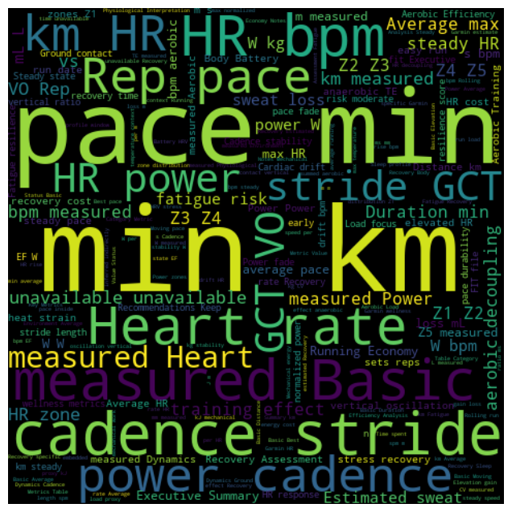

Featured · June 2026
13 Weeks of Running in Chennai: What the Data Actually Says
An end-to-end review of 21 easy runs: efficiency trends, fatigue indicators, heat impact, and what changed over 13 weeks.
Read the post →Blog
Long-form posts on data, AI tooling and running analytics.

Featured · June 2026
An end-to-end review of 21 easy runs: efficiency trends, fatigue indicators, heat impact, and what changed over 13 weeks.
Read the post →